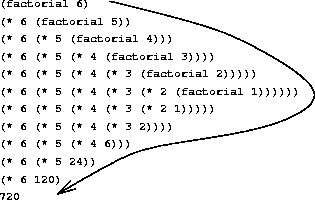

Funktionale Programmierung – Techniken
Programmierparadigmen
Anwendung von Entwurfsvorschrift V auf zwei Listen
Drei Fälle
- Ein Argument kann atomar behandelt werden, d.h. eine Liste muss nicht zerlegt werden.
- Beide Listen sind im Gleichschritt zu verarbeiten.
- Bei beiden Listen ist für die Ermittlung des Resultats der Zugriff auf das erste Element und die Restliste notwendig.
Behandlung der drei Fälle:
- EV V wird wörtlich angewendet, weil das zweite Argument nicht zerlegt werden muss. Beispiel: append (concatenate).
Da beide Listen gleich lang sind, genügt es, eine von beiden auf Leersein zu prüfen. Für die Ermittlung des Resultats ist aber der Zugriff auf das erste Element und die Restliste von beiden Argumentlisten notwendig.
Das führt zur folgenden angepassten Funktionsschablone:
Funktionsschablone für Fall 2
(def listen-funktion (fn [lst1 lst2] (cond (empty? lst1) ... :else ... (first lst1) ... (first lst2) ;; =========== ... (listen-funktion (rest lst1) (rest lst2)) ...))) ;; ===========
Behandlung von Fall 3
Es gibt keine nutzbare Abhängigkeit der beiden Parameter. Hier müssen grundsätzlich alle (vier) Fälle berücksichtigt werden:
(def listen-funktion (fn [lst1 lst2] (cond (and (empty? lst1) (empty? lst2)) ... (and (pair? lst1) (empty? lst2)) ... (first lst1) ... (rest lst1) ... (and (empty? lst1) (pair? lst2)) ... (first lst2) ... (rest lst2) ... (and (pair? lst1) (pair? lst2) ... (first lst1) ... (first lst2) ... ... (rest lst1) ... (rest lst2)) ...)))
Drei mögliche Rekursionsschemata
Man beachte, dass die Schablone noch keine rekursiven Aufrufe enthält. Nur für den Fall, dass beide Argumente nicht leer sind, ist eine Rekursion möglich.
Hier sind aber drei Varianten denkbar:
(listen-funktion lst1 (rest lst2)) (listen-funktion (rest lst1) lst2) (listen-funktion (rest lst1) (rest lst2))
Welche in Betracht kommt, kann nur nach weiterer Problemanalyse entschieden werden.
Lokale Definitionen
Ineffiziente Funktion sumprod
;; berechnet eine zweielementige Liste bestehend ;; aus der Summe und dem Produkt der Elemente der ;; Zahlenliste (def sumprod (fn [lon] {:pre [(every? number? lon)] :post [(every? number? %)]} (cond (empty? lon) (list 0 1) :else (list (+ (first lon) (first (sumprod (rest lon)))) (* (first lon) (first (rest (sumprod (rest lon)))))))))
Warum ist die Funktion ineffizient?
Verwendung einer lokalen Definition
;; berechnet ... (def sumprod (fn [lon] {:pre [(every? number? lon)] :post [(every? number? %)]} (cond (empty? lon) (list 0 1) :else (let [sp (sumprod (rest lon))] ;; === == (list (+ (first lon) (first sp)) ;; == (* (first lon) (first (rest sp)))))))) ;; ==
Lokale Definitionen dienen (u.a.) zur Benennung des Wertes eines Ausdrucks zum Zweck der Vermeidung von Mehrfachberechnungen.
Syntax und Semantik von let
Die Syntax der Anwendung der Pseudofunktion
let, ein sogenannterlet-Ausdruck, hat die folgende Form:(let\([v_{1}\ e_{1}\ldots v_{n}\ e_{n}]\)exp)- Dabei sind
- die \(v_{i}\) Variablenbezeichner,
- die \(e_{i}\) Ausdrücke sowie
- \(exp\), der Rumpf des
let-Ausdrucks, ebenfalls ein Ausdruck.
- Semantik informell: Der Wert eines
let-Ausdrucks ist der Wert, der sich aus der Auswertung seines Rumpfes ergibt, wenn alle darin vorkommenden \(v_{i}\) durch die Werte der korrespondierenden \(e_{i}\) ersetzt werden.
- Für die formale Definition der Semantik genügt es hier festzuhalten,
dass der Ausdruck
(let\([v_{1}\ e_{1}\ldots v_{n}\ e_{n}]\)exp)
durch den folgendenfn-Ausdruck ersetzt werden kann:
((fn\([v_{1}\ \ldots\ v_{n}]\)exp)\(e_{1} \ldots e_{n})\) letist „syntaktischer Zucker”.
Pragmatik von let
- Einen Anwendungszweck von
lethaben wir in der Funktionsumprodbereits gesehen: Benennung eines Zwischenergebnisses zur Vermeidung von Mehrfachberechnungen. Die Benennung von Werten kann ein Programm besser lesbar machen:
;; berechnet \ldots (def sumprod (fn [lon] {:pre [(every? number? lon)] :post [(every? number? %)]} (cond (empty? lon) (list 0 1) :else (let [sp (sumprod (rest lon)) restsumme (first sp) restprodukt (first (rest sp))] (list (+ (first lon) restsumme) (* (first lon) restprodukt))))))
Gültigkeitsbereich der durch let definierten Bezeichner
Die Variablen \(v_{i}\) in einem
let-Ausdruck(let\([v_{1}\ e_{1}\ldots v_{n}\ e_{n}]\)exp)sind im Rumpf \(exp\) sichtbar.
- Außerdem sind in \(e_{i}\) alle \(v_{j}\) mit \(j < i\) sichtbar.
- \(v_{i}\) kann aber nicht in \(e_{i}\) verwendet werden.
- Damit können mithilfe von
letkeine rekursiven Funktionen definiert werden. - Für diesen Zweck existiert die Pseudofunktion
letfn(s. u.).
Pragmatik von let (2)
- Wenn Hilfsfunktionen nur reinen Hilfscharakter haben, d.h. nur im Kontext der Hauptfunktion sinnvoll sind, kann es – schon zur Vermeidung von Namenskonflikten in der globalen Umgebung – zweckmäßig sein, Hilfsfunktionen lokal zu definieren.
- Betrachten wir dazu eine weitere Variante von
sumprodmit zwei Hilfsfunktionen.
sumprod mit Hilfsfunktionen
(def sumprod (fn [lon] {:pre [(every? number? lon)] :post [(every? number? %)]} (list (sum lon) (prod lon))))
(def sum (fn [lon] (cond (empty? lon) 0 :else (+ (first lon) (sum (rest lon)))))) (def prod (fn [lon] (cond (empty? lon) 1 :else (* (first lon) (prod (rest lon))))))
sumprod mit lokalen Hilfsfunktionen
(def sumprod (fn [lon] (letfn [(sum [lon] (cond (empty? lon) 0 :else (+ (first lon) (sum (rest lon))))) (prod [lon] (cond (empty? lon) 1 :else (* (first lon) (prod (rest lon)))))] (list (sum lon) (prod lon)))))
Man beachte, dass hier für die rekursiven lokalen Hilfsfunktionen
die Pseudofunktion letfn verwendet werden muss.
Funktionen höherer Ordnung (1)
Entwurfsvorschriften bewirken ähnliche Funktionen
Zum Beispiel
(def sum (fn [x] (cond (empty? x) 0 :else (+ (first x) (sum (rest x)))))) (def prod (fn [x] (cond (empty? x) 1 :else (* (first x) (prod (rest x))))))
Worin unterscheiden sich die beiden Funktionen?
Entwurfsvorschriften bewirken ähnliche Funktionen
Hier:
(def sum (fn [x] (cond (empty? x) 0 ;; = :else (+ (first x) (sum (rest x)))))) ;; = (def prod (fn [x] (cond (empty? x) 1 ;; = :else (* (first x) (prod (rest x)))))) ;; =
Noch zwei ähnliche Funktionen
Beispiel: Aus einer ungeordneten Liste von Zahlen werden alle unterhalb/oberhalb eines Schwellwerts heraus gefiltert:
(def unterhalb/oberhalb (fn [lvz schwelle] {:pre [(every? number? lvz) (number? schwelle)] :post [(every? number? %)]} (cond (empty? lvz ) () (</> (first lvz) schwelle) ;; === (cons (first lvz) (unterhalb/oberhalb (rest lvz ) schwelle)) :else (unterhalb/oberhalb (rest lvz ) schwelle))))
Ähnliche Funktionen vermeiden
- Die beiden Funktionen
unterhalbundoberhalbunterscheiden sich – abgesehen von ihrem Namen – nur in dem Vergleichsoperator. - Die Funktion
oberhalberzeugt man wahrscheinlich durch Kopieren und Anpassen vonunterhalb. - Kopieren von Code ist eine Todsünde wider die Pflegbarkeit von Programmen.
- Bessere Lösung: Eine allgemein verwendbare Filterfunktion, der die Art der Vergleichsoperation als Argument mitgegeben wird.
- Wir brauchen eine Funktion, die eine Funktion als Argument akzeptiert: Funktion höherer Ordnung (Typ 1).
Eine Filterfunktion
;; filtere: (number number -> boolean) ;; (list-of number) number ;; -> (list-of number) (def filtere (fn [vglfkt lvz schwelle] ;; ====== (cond (empty? lvz) () (vglfkt (first lvz) schwelle) (cons (first lvz) (filtere vglfkt (rest lvz ) schwelle)) :else (filtere vglfkt (rest lvz ) schwelle))))
- Um unterhalb zu realisieren, ruft man z.B.
filtereso auf:
(filtere < ’(3 4 5 6) 5) ;=> (3 4) - Man beachte den Vertrag der Funktion (informelle Vertragsnotation)!
Funktionen sind Werte erster Ordnung
Die Möglichkeit, Funktionen zu bauen, die andere Funktionen als Argument erwarten, beruht auf einem ebenso einfachen wie fundamentalen Prinzip:
Funktionen sind Werte erster Ordnung
Das bedeutet im Grunde, dass Funktionen überall dort, wo normale Werte verwendet werden dürfen, ebenfalls benutzt werden können.
Sie dürfen daher als
- Argumente von Funktionen benutzt,
- als Resultate von Funktionen geliefert und
- in Datenstrukturen verpackt
werden.
- Das Prinzip eröffnet eine breite Palette an Programmiertechniken.
- Hingegen schränken viele populäre Programmiersprachen die Verwendung von Funktionen willkürlich ein!
- Anmerkung: Funktionen mit Funktionen als Parameter gingen sogar „schon” in Pascal.
Verallgemeinerung der Filterfunktion
Die Funktion filter wendet auf jedes Element der Zahlenliste das Prädikat praed?
an. In die Ergebnisliste werden die Elemente aufgenommen, für die das
Prädikat true liefert.
;; filter: (number -> boolean) (list-of number) ;; -> (list-of number) (def filter (fn [praed? lvz] (cond (empty? lvz) () (praed? (first lvz)) (cons (first lvz) (filter praed? (rest lvz))) :else (filter praed? (rest lvz ))))) (deftest test-filter (is (= (filter (fn [x] (< x 5)) '(3 4 5 6 )) '(3 4))) (is (= (filter odd? '(3 4 5 6 )) '(3 5))))
Eine Abstraktion für sum und prod
- Es kommt häufiger vor, dass man z.B. eine Liste von Zahlen zu einem Wert zusammenfalten will.
- Die verschiedenen Faltungsarten unterscheiden sich meist nur in dem
Basiswert (Ergebnis für die leere Liste) und der eigentlichen
Faltungsfunktion, z.B. Addition für
sumund Multiplikation fürprod. Man beachte auch hier wieder den Vertrag der Funktion!
;; falte: (number number -> number) ;; number (list-of number) -> number (def falte (fn [fltfkt basis lvz] ;; ====== ===== (cond (empty? lvz) basis ;; ===== :else (fltfkt (first lvz) ;; ====== (falte fltfkt basis (rest lvz))))))
Systematisierung der Ableitung von Funktionen höherer Ordnung
Zunächst zwei Beispiele
- Quadrieren einer Liste von Zahlen
;; quadrieren: (list-of number) -> (list-of number) (def quadrieren (fn [lvz] (cond (empty? lvz) () :else (cons ((fn [x] (* x x)) (first lvz)) (quadrieren (rest lvz))))))
- Extrahieren der Produktnamen aus einer Preisliste
; Ein Produkt ist ein Record (defrecord Produkt [name preis]) ; Eine Preisliste (pl) ist ; () oder ; (cons p pl), wobei p ein Produkt ; und pl eine Preisliste ist. ;; produkt-namen: pl -> (list-of symbol) (def produkt-namen (fn [pl] (cond (empty? pl) () :else (cons (:name (first pl)) (produkt-namen (rest pl))))))
„Abstraktionsvorschrift“
- Die beiden Funktionen
quadrierenundprodukt-namenunterscheiden sich – abgesehen von ihren Namen – nur in der Funktion, die auf das erste Listenelement angewendet wird. - Wann immer zwei (oder mehr) dieser Art ähnliche Funktionen auftreten,
gehe man folgendermaßen vor:
- Markiere die Stellen in den Funktionen, wo sie sich unterscheiden. Wenn sie sich nur in Werten (auch Funktionen sind Werte) unterscheiden, ist eine Abstraktion möglich.
- Führe für jedes Paar markierter Stellen einen neuen Namen ein.
- Übernimm diesen Namen in die Liste der formalen Parameter der Funktionen. Nach diesem Schritt müssen die beiden Funktionen außer in ihrem Namen übereinstimmen.
- Schließlich ersetzen wir die Funktionsnamen durch den Namen einer neuen abstrakten Funktion.
- So entsteht aus
quadrierenundprodukt-namenformal die Funktionmap(siehe nächste Folie).
Die Funktion map
;; map: (listOf X) (X -> Y) -> (list-of Y) (def map (fn [lst fun] (cond (empty? lst) () :else (cons (fun (first lst)) (map (rest lst) fun)))))
- Weitere Umbenennungen:
- Aus den Parameternamen
plbzw.lvzwurdelst.
- Aus den Parameternamen
- Man beachte wieder den Vertrag der Funktion! X und Y sind sogenannte Typparameter.
- Als letzten Schritt des Abstraktionsprozesses definiert man die Originalfunktionen mithilfe der neuen abstrahierten Funktion.
Noch einmal: Falten
Ein anderes Verständnis für falte
- Die Reduktion einer Liste zu einem Wert ist eine häufig vorkommende Aufgabe.
- Als Funktion höherer Ordnung gehört die Falte-Funktion zum Standard-Repertoire funktionaler Programmiersysteme.
- häufig verwendete Bezeichner: fold, reduce …
- Die Wirkung von
(falte + 0 '(11 17 5))
kann man sich, wie folgt, veranschaulichen:falteersetzt in der Argumentliste, die dem Ausdruck
(cons 11 (cons 17 (cons 5 ())))
entspricht, jedes Auftreten vonconsdurch+und jedes Auftreten von()durch 0:
(+ 11 (+ 17 (+ 5 0)))- Verallgemeinert: Jedes Auftreten von
conswird durch die Faltungsfunktion (fltfkt) und jedes Auftreten von()durch den Basiswert ersetzt.
Weitere Anwendungen von falte
- Was liefern die Ausdrücke
- (falte cons () '(a b c)) ?
- (falte cons '(x y z) '(a b c)) ?
Ein generisches falte: reduce
- Wir abstrahieren die Funktion
faltebezüglich des Typs der Listenelemente. - Aus dem Vertrag
;; falte: (number number -> number) number ;; (list-of number) -> number
wird:
;; reduce: (X Y -> Y) Y (list-of X) -> Y
Die Funktionsdefinition für reduce
;; reduce: (X Y -> Y) Y (list-of X) -> Y (def reduce (fn [combine base l] (cond (empty? l) base :else (combine (first l) (reduce combine base (rest l))))))
- Der Parameter
basesteht für den Funktionswert im Fall der leeren Liste. - Der Parameter
combineist die Funktion, die aus dem Zugriff auf das erste Element der Liste und der Restliste den Funktionswert ermittelt, falls die Listelnicht leer ist.
Anwendungen von reduce
;; sum: (list-of number) -> number (def sum (fn [list) (reduce + 0 list))) ;; product: (list-of number) -> number (def product (fn [list) (reduce * 1 list))) ;; erzeugt eine Liste aus all den Elemente von alox, ;; fuer die praedikat? gilt ;; filterr: (X -> boolean) (list-of X) ;; -> (list-of X) (def filterr (fn [praedikat? alox] (let [cp (fn [x y] (cond (praedikat? x) (cons x y) :else y))] (reduce cp () alox))))
Funktionen höherer Ordnung (2)
Funktionen mit Funktionen als Resultat
Was liefert der Ausdruck
(inc 3), wenn die Funktionincwie folgt definiert ist?(def inc (fn [n] (fn [z] (+ z n))))
- Welches Resultat liefert eine Anwendung der Funktion
dot?
(def dot (fn [f g] (fn [x] (f (g x)))))
Anwendung von
incunddot:(def inclist (fn [x] (map x (inc 1)))) (def increv (fn [x] ((dot inclist reverse) x))) (increv '(3 13 23 33)) ;=> (34 24 14 4)
Ableitung einer map-Alternative
- Die Anwendung der „Abstraktionsvorschrift” aus dem Abschnitt
Systematisierung der Ableitung von Funktionen höherer Ordnung auf
die Funktionen
quadrierenundprodukt-namenführte zur Definition der Funktionmap. mapist eine Funktion höherer Ordnung vom Typ 1.Die Definition der urprünglichen Funktionen, z.B.
produkt-namen, geschieht dann unter Verwendung vonmap:(def produkt-namen (fn [pl] (map pl produkt-name)))
- Mit einer Funktion höherer Ordnung vom Typ 2 ist es nun aber auch
möglich, eine Funktion – nennen wir sie
mapp– zu definieren, die als Argument eine Funktionferwartet und eine Funktion als Resultat liefert, diefauf jedes Element einer Liste anwendet.
Modifikation der Abstraktionsvorschrift
Setzen wir die Existenz von
mappvoraus, können wirprodukt-namenwiederum so definieren:(def produkt-namen (mapp produkt-name))…und
quadrieren:(def quadrieren (mapp (fn [x] (* x x))))- Wir können
mappdurch eine modifizierte Abstraktionsvorschrift (vgl. Folie Abstraktionsvorschrift) gewinnen.
Modifizierte Abstraktionsvorschrift
- Ausgangspunkt sind wieder zwei ähnliche Funktionen wie z.B.
quadrierenundprodukt-namen - Wir markieren wieder die Stellen in den Funktionen, wo sie sich unterscheiden und
- führen für jedes Paar markierter Stellen einen neuen Namen ein.
Wenn diese Schritte formal so durchgeführt werden, sieht z.B. die Funktion
produkt-namenso aus:(def produkt-namen (fn [pl] (cond (empty? pl) () :else (cons (fun (first pl)) (produkt-namen (rest pl))))))
- In dieser Definition tritt
funals freie Variable auf.
- Um dies zu beseitigen, nehmen wir
funnicht – wie in der ersten Abstraktionsvorschrift – in die Parameterliste auf, sondern definierenprodukt-namenlokal innerhalb einer Funktionmappmitfunals Parameter undprodukt-namenals Resultat. mappsieht dann so aus:(def mapp (fn [fun] ;; === (letfn [(maplocal [lst] ;; ======== (cond (empty? list) () :else (cons (fun (first lst)) (maplocal (rest lst)))))] ;; ======== maplocal))) ;; ========
- Der in der abstrahierten Funktion nun bedeutungslos gewordene
Bezeichner
produkt-namenist hier durch den generischen Bezeichnermaplocalersetzt worden. Die Anwendung
(mapp (fn [x] (* x x)))liefert nun eine Funktion, die, angewendet auf eine Liste (von Zahlen), jedes Element quadriert.
- Frage: Wie lautet der Vertrag von
mapp? (Antwort als Aufgabe)
Rekursive und iterative Prozesse
Fakultät rekursiv
Ausgehend von der mathematischen efinition:
\(n! = n \cdot (n-1) \cdot (n-2) \cdot\cdot\cdot 2 \cdot 1 = n\cdot (n-1)!\)
kann folgende rekursive Funktionsdefinition gegeben werden:
(def factorial (fn [n] (cond (= n 1) 1 :else (* n (factorial (- n 1))))))
Die Anwendung (factorial 6) führt zu einem rekursiven
Abarbeitungsprozess, siehe nächste Folie.
rekursive Abarbeitung der Fakultät

Fakultät iterativ
\(n! = 1 \cdot 2 \cdot\cdot\cdot (n-1) \cdot n\)
Berechnung der Fakultät im „Vorwärtsgang” mit zwei Hilfsvariablen:
product \(\leftarrow\) product * counter
counter \(\leftarrow\) counter + 1
product ist gleich \(n!\), wenn counter größer als \(n\) ist.
(def factorial (fn [n] (fact-iter 1 1 n))) (def fact-iter (fn [product counter max-counter] (cond (> counter max-counter) product :else (fact-iter (* product counter) (+ counter 1) max-counter))))
iterative Abarbeitung der Fakultät

Fakultät iterativ mit lokaler Hilfsfunktion
- Die Funktion
fact-iterhat einen reinen Hilfscharakter, d.h. sollte nur vonfactorialaufgerufen werden. Konsequenz: Funktion
fact-iterlokal definieren:(def factorial (fn [n] (letfn [(fact-iter [product counter] (cond (> counter n) product :else (fact-iter (* product counter) (+ counter 1))))] (fact-iter 1 1))))
- Beachte: Das dritte Argument für
fact-iterist überflüssig geworden.
loop/recur in Clojure
- Clojure erlaubt wegen der Java-Aufrufkonventionen keine Endrekursionsoptimierung.
- Ersatzweise existiert die loop/recur-Konstruktion:
(def factorial (fn [n] (loop [product 1 counter 1] (cond (> counter n) product :else (recur (* product counter) (+ counter 1))))))
Akkumulierende Parameter
- Ein rekursiver Prozess ist durch eine Folge von verzögerten Operationen gekennzeichnet.
- Der Speicherbedarf für das Merken von noch nicht ausgeführten Operationen wächst linear mit \(n\).
- Die iterative Abarbeitung erfordert hingegen nur konstanten
Speicherbedarf für die Werte von
product,counterund max-counter. productbezeichnet man als akkumulierenden Parameter.- Akkumulierende Parameter ermöglichen oft die iterative Abarbeitung rekursiver Funktionen.
- Akkumulierende Parameter führen oft zu effizienteren Funktionen.
Akkumulierende Parameter
Invertieren einer Liste
;; kehrt die Reihenfolge der Symbole einer Liste um ;; rev-list: (list-of symbol) -> (list-of symbol) (def rev-list (fn [lst] (cond (empty? lst) () :else (putatend (first lst) (rev-lst (rest lst)))))) ;; stellt das Symbol an das Ende der Lste ;; putatend: symbol (list-of symbol) -> (list-of symbol) (def putatend (fn [symbl lst] (cond (empty? lst) (cons symbl () ) :else (cons (first lst) (putatend symbl (rest lst))))))
Effizienzbetrachtung:
- Vorbemerkung: Beide Funktionen entstehen durch Anwendung der bekannten Entwurfsvorschriften.
putatendwird \(n\) -mal rekursiv aufgerufen, wenn \(n\) die Mächtigkeit der Liste ist, d.h.conswird \(n\) -mal ausgeführt.rev-listruft sich selbst ebenfalls \(n\) -mal auf.- Jeder Aufruf von
rev-listruft einen Aufruf vonputatendhervor. - Für diese Aufrufe von
putatendist die Länge des zweiten Arguments \(n-1, n-2\ldots 1, 0\). - Die Anzahl der
cons-Aufrufe vonputatendbeträgt: \[0 + 1 + \cdots + n-1 = \frac{n(n-1)}{2}\] - Die Funktion
rev-listwächst quadratisch: \(O(\texttt{rev-list})=n^2\). - Das Invertieren einer Liste sollte aber nur linearen Aufwand erfordern.
- Lösung: Hilfsfunktion mit akkumulierendem Parameter
Invertieren einer Liste
;; kehrt die Reihenfolge der Symbole einer Liste um ;; rev-list: (list-of symbol) -> (list-of symbol) (def rev-list (fn [lst] (loop [list-x lst list-y ()] (cond (empty? list-x) list-y :else (recur (rest list-x) (cons (first list-x) list-y))))))
- Die Anzahl der
cons-Aufrufe inrevwächst linear mit der Länge der Liste.
Einsatz von akkumulierenden Parametern
- Im Zusammenhang mit akkumulierenden Parametern sind zwei Fragen
interessant:
- Woran erkennt man, dass eine Funktion von akkumulierenden Parametern profitieren kann?
- Was muss ggf. in einem akkumulierenden Parameter eigentlich akkumuliert werden?
- Schwierigkeit beim Entwurf einer solchen Hilfsfunktion: Die bekannten Entwurfsvorschriften sind nicht ohne weiteres anwendbar.
Vorgehensweise beim Entwurf
- Da war zunächst die Frage, ob eine Funktion mit akkumulierendem Parameter zweckmäßig ist.
- Frage ist im Allgemeinen nicht leicht zu beantworten.
- Indiz: Die Anwendung der bekannten Entwurfsvorschriften liefert eine Funktion, die die Liste rekursiv abarbeitet unter Verwendung einer Hilfsfunktion, die die Liste ebenfalls rekursiv abarbeitet.
- Hier ist eine Effizienzbetrachtung angebracht.
- Vergleiche die Definition von
rev-listmit Hilfsfunktionputatend. - Der Entwurf einer Hilfsfunktion mit akkumulierendem Parameter
vollzieht sich dann in zwei Schritten:
- Man schreibt zunächst eine Funktionsschablone für die Funktion samt lokaler Hilfsfunktion mit akkumulierendem Parameter auf. Siehe nächste Folie!
- Man beschreibt präzise die Aufgabe des akkumulierenden Parameters durch eine sogenannte Akkumulatorinvariante. Siehe übernächste Folie!
Funktionsschablone für rev-list mit rev
(def rev-list (fn [lst] (letfn (rev [listX akku] ;; Akkumulator ... (cond (empty? listX) ... akku ... :else ... (rev (rest listX) ... (first listX) ... akku) ;; ========================== )) (rev lst ...)))
- Das Argument für den akkumulierenden Parameter im rekursiven Aufruf
der lokalen Hilfsfunktion
revist hier unterstrichen. - Es muss so bestimmt werden, dass die noch zu definierende Akkumulatorinvariante gültig bleibt.
Akkumulatorinvariante für rev
- Eine Akkumulatorinvariante ist eine Aussage über das Argument der
Hauptfunktion (hier:
lst), das entsprechende Argument der Hilfsfunktion (hier:listX) und den Akkumulator, die vor und nach jedem rekursiven Aufruf der Funktion gilt. - Für den letzten Aufruf von
revgilt: \(listX = ()\). Wenn wir voraussetzen, dassakkudann das invertiertelstenthält, können wir die Schablone für den Fall, dass das ArgumentlistXvonrev()ist, so ergänzen:(empty? listX) akku. - Für den ersten Aufruf von
revgilt: \(listX = lst\). Da beim Invertierungsprozess keine Listenelemente hinzukommen, kann die Schablone hier so ergänzt werden:(rev lst () ). - Da bei jedem rekursiven Aufruf von
revvorne ein Element vonlistXwegenommen wird, muss(first listX)an den Anfang der Listeakkugestellt werden. Damit ergibt sich für den unterstrichenen Teil der Schablone:(cons (first listX) akku)).
- Akkumulatorinvariante:
akkuist eine Liste mit denjenigen Elementen vonlstin umgekehrter Reihenfolge, die denen vonlistXvorangehen. Damit ergibt sich für
rev-listmitrev:(def rev-list (fn [lst] (letfn [(rev [listX akku] (cond (empty? listX) akku :else (rev (rest listX) (cons (first listX) akku))))] (rev lst () ))))
Da die Funktion rev end-rekursiv ist, sollte in Clojure das
loop/recur-Konstrukt – wie oben gezeigt – verwendet werden.
Zusammenfassung
- Funktionen sind Werte erster Ordnung.
- Funktionen höherer Ordnung erfordern weder syntaktische noch semantische Erweiterungen der Programmiersprache.
- Funktionen höherer Ordnung stellen ein mächtiges Abstraktionsmittel bereit: „iterative“ Abstraktion.
- Die „klassischen” Funktionen höherer Ordnung:
- reduce
- filter
- map
- Lokale Definitionen und akkumulierende Parameter sind häufig benutzte funktionale Ausdrucksmittel bzw. Programmiertechniken.